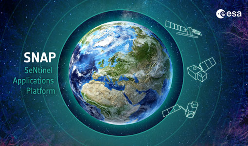
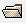
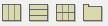
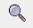
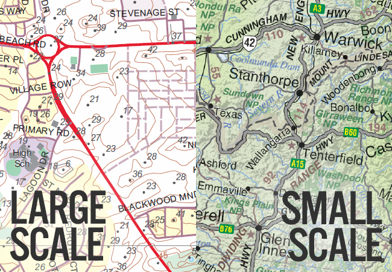
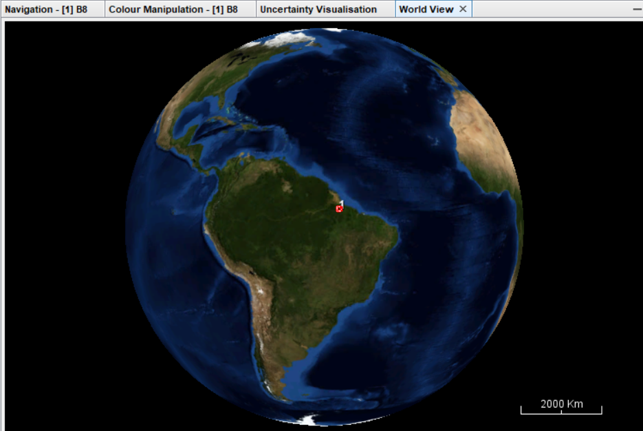
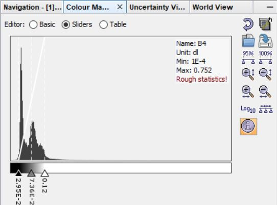
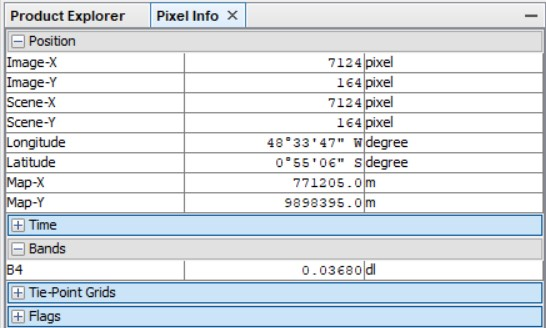

Introduction to SNAP
About SNAP

SNAP, the SeNtinel Application Platform is developed by the ESA specifically to process Sentinel-imagery, however also other remotey sensed images can be read. The current version is 8.0.0. SNAP is a relatively new software especially designed for the analysis of Sentinel products (Sentinel 2A was launched in 2015) and hence still contains some bugs (especially for mac-users, might try the older version 7.0.0). Not all applications are supported that you will find in classic Image Processing programs such as ENVI, but it is very user friendly and ideal to introduce you to satellite image processing. Also, it is free!
Overview
Exercise: Opening a Sentinel-2 image in snap
-
Open the sentinel image that you have downloaded (you do not need to unzip it). You can do this in several ways:
- Drag and drop the zip folder in the Products explorer
- Click file > Open Products and browse to your zip-folder
- Click  and browse to your zip-folder.
-
Unfold the image folder. Explore the files included. Open the Blue, Green, Red and NIR image.
- Test the tile buttons. Make sure you can see the four images simultaneously:
 - Explore the navigation panel.
Sentinel 2 Bands
Let's have a quick look at the specifications of a Sentinel-2 image. There are 13 Sentinel 2 bands in total, with a resolution of 10, 20 or 60m:

The navigation window
The Navigation Window is used to move the viewport of an Image View, to zoom in and out of it and to rotate the image in steps of 5 degrees using the spinner control below the image preview. The current viewport is depicted by a semi-transparent rectangle, which can be dragged in order to move the viewport to another location.
In the bottom left, you will find the zoom factor: zoom is relative to the drawing extents.
A scale factor of:
1 shows a part of the image
2 shows entities twice as large
0.5 shows entities half as large
The text box at the left side of slider can be used to adjust the zoom factor manually. The Navigation window additionally provides the following features via its tool buttons (top right):
- Zoom In: Zooms in by a factor of 1.2.
Zoom Out: Zooms out by a factor of 1/1.2. - Zoom Actual Pixel: Sets the zoom factor to the default value so that the size of an image pixel has the same size of a display pixel.
- Zoom All: Adjusts the viewport to cover the entire image.
- Synchronise Views: Synchronises the viewports of all compatible image views.
- Synchronise Cursor: Displays a synchronised cursor on all opened image views.
You can also zoom the images by scrolling on the image, or by clicking  in the toolbar.
Zoom factor vs Representative Fraction
The zoom factor is not the same as a Representative Fraction (RF), which is often used to indicate the scale of a map. The RF indicates the ratio between the number of units on the map to the number of units on the ground.
The RF factor 1:100000 e.g. implies that one cm on map is equal to 1 km on land. Maps are described as either large-scale or small-scale. Large-scale maps show a smaller amount of area with a greater amount of detail. The geographic extent shown on a large-scale map is small. A large scaled map expressed as a representative scale would have a smaller number to the right of the ratio.
For example, a large-scale map could have a RF scale of 1: 1,000. Large-scale maps are typically used to show neighbourhoods, a localize area, small towns, etc. Small-scale maps show a larger geographic area with few details on them. The RF scale of a small-scale map would have a much larger number to the right of the colon such as 1: 1,000,000. Small-scale maps are used to show the extent of an entire country, region, or continent.

- Zoom to the Airport
- Explore the World View panel. The red rectangle indicates the position of the image on the globe.

The Colour Manipulation tool
The colour manipulation tool window window is used to modify the colours used in the image. If you are opening an Image View of a data product's band, the Sentinel Toolbox either loads image settings from the product itself (BEAM-DIMAP format only) or uses default colour settings. In the Colour manipulation panel, explore the histogram. On the image, zoom to the airport and adjust the contrast. Restore the contrast afterwards.

Pixel info view
If you click on the tab 'Pixel View' (right to the product explorer), pixel information will be displayed while you move the mouse over the band image view.
